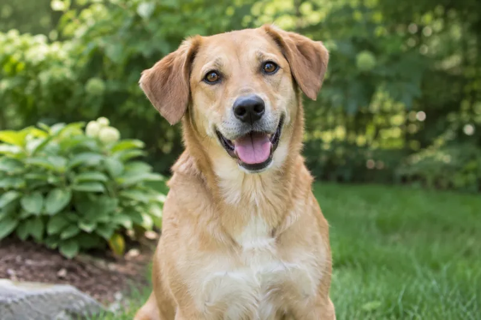
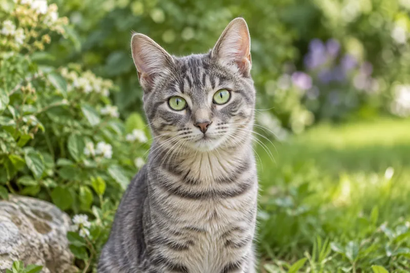
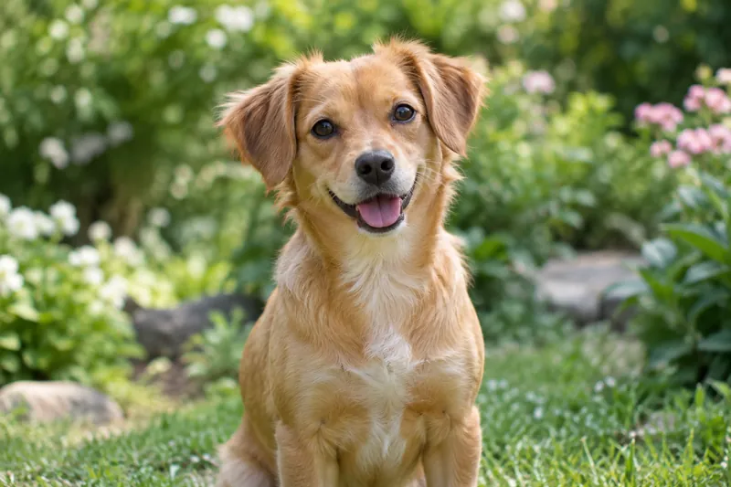

Adoção responsável
Adotar exige tempo, carinho e condições para oferecer alimentação e cuidados veterinários.
UM NOVO LAR, UMA NOVA HISTÓRIA
A adoção responsável transforma vidas. Conheça o projeto e descubra como ajudar um animal a encontrar seu lar.
Quero ajudarNosso projeto acadêmico propõe conectar pessoas interessadas em adotar ou ser voluntárias à causa animal, incentivando cuidado, respeito e responsabilidade.
Adotar exige tempo, carinho e condições para oferecer alimentação e cuidados veterinários.
Você pode contribuir com divulgação, apoio em eventos e ações de conscientização.
Defendemos a prevenção do abandono e o respeito às necessidades de cada animal.
Animais fictícios e imagens geradas por IA para demonstrar a proposta do projeto.

Cão de porte médio, 2 anos. Brincalhão e companheiro.

Gata, 1 ano. Curiosa e carinhosa.

Cadela de porte pequeno, 3 anos. Tranquila e afetuosa.